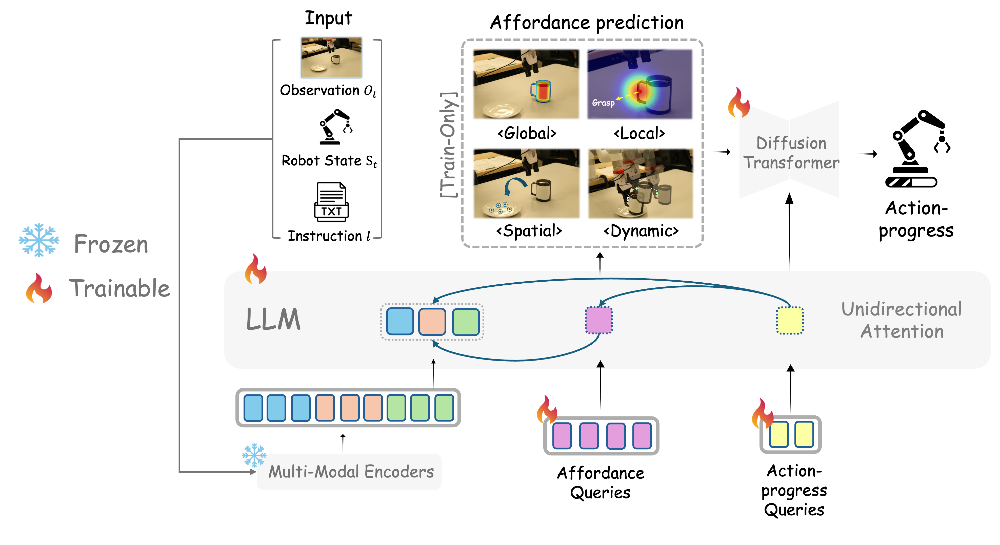
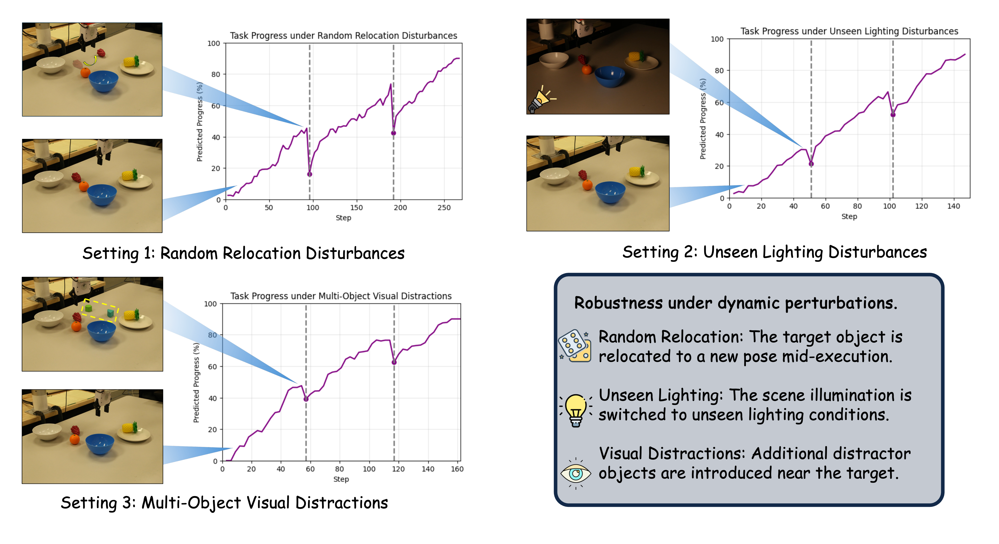
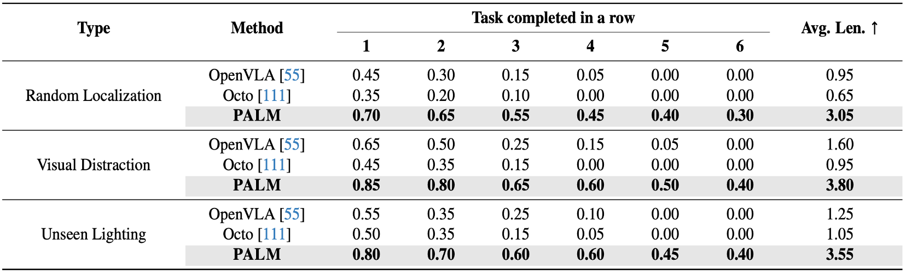

Abstract
Recent vision-language-action models show strong promise for robotic manipulation, but they remain brittle in long-horizon, multi-step tasks. PALM addresses this limitation by structuring policy learning around interaction-centric affordance reasoning and subtask progress cues. It predicts structured future affordances that capture object relevance, contact geometry, spatial placements, and motion dynamics, then conditions a progress-aware diffusion policy on these affordance representations. The resulting policy jointly predicts actions and continuous within-subtask progress values, helping the robot decide when to continue, transition, or terminate a subtask. Across simulation and real-world experiments, PALM improves long-horizon manipulation performance, reaching a 91.8% success rate on LIBERO-LONG, improving average length on CALVIN ABCD by 12.5%, and achieving a 2× improvement over real-world baselines across three generalization settings.
Method
PALM introduces two complementary query sets on top of a multimodal VLA backbone: affordance queries that anticipate task-relevant future interaction cues, and action-progress queries that generate actions while estimating subtask completion. The affordance representation is factorized into global, local, spatial, and dynamic components, encouraging the policy to reason about what object matters, where to interact, where to place or move, and how the next interaction should unfold.
Structured affordance foresight
Predicts future interaction cues for object relevance, contact geometry, spatial placement, and motion dynamics.
Progress-aware control
Jointly predicts action and continuous progress to stabilize subtask transitions and reduce repeated or skipped actions.
Long-horizon robustness
Maintains coherent behavior under object relocation, unseen lighting, and visual distractors in real-world rollouts.

PALM architecture: multimodal encoding, structured affordance queries, and action-progress diffusion decoding.
Results and Analysis
PALM is evaluated across simulation benchmarks and real-world long-horizon generalization settings. The real-world setup uses a UFACTORY xArm6 with Gripper G2 and dual RealSense D455 cameras. The long-horizon task requires a robot to complete a six-step instruction sequence while remaining robust to relocation, lighting shifts, and distractor objects.

Real-world robot setup and six-step long-horizon task guided by one high-level instruction.

Robustness settings: random relocation, unseen lighting disturbances, and multi-object visual distractions.

PALM achieves longer-horizon completion across real-world generalization settings.
Qualitative Videos
The videos below show PALM rollouts across the original task and robustness settings. Each clip illustrates how progress-aware affordance reasoning supports temporally coherent execution across multi-step manipulation.
BibTeX
@article{liu2026palm,
title={PALM: Progress-Aware Policy Learning via Affordance Reasoning for Long-Horizon Robotic Manipulation},
author={Liu, Yuanzhe and Zhu, Jingyuan and Mo, Yuchen and Li, Gen and Cao, Xu and Jin, Jin and Shen, Yifan and Li, Zhengyuan and Yu, Tianjiao and Yuan, Wenzhen and Ding, Fangqiang and Lourentzou, Ismini},
journal={arXiv preprint arXiv:2601.07060},
eprint={2601.07060},
archivePrefix={arXiv},
primaryClass={cs.RO},
year={2026}
}